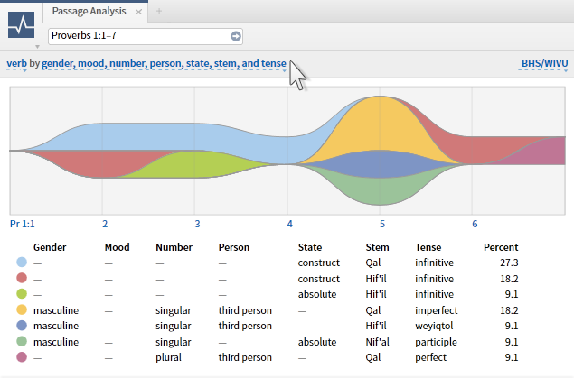

Tim Swast is a Software Friendliness Engineer (a.k.a Developer Programs Engineer) in Seattle, writing sample applications and tutorials about Big Data on Google Cloud Platform. In his free time he draws pixel art and writes mathematical simulations. His passion is showing the use of data and models to make better decisions.
Software Friendliness Engineer (a.k.a Developer Programs Engineer) for Google Cloud Platform.
Software Engineer for the Google for Work (Enterprise) team. I have worked on three projects so far, working primarily in Java, Python, and JavaScript, with some Go and Dart.
As an Associate Software Engineer in Oracle Strategic Applications Engineering I measured and published standard benchmark results, run on Oracle hardware. In the months before the SPARC T5-8 release, I ran and published the TPC-C benchmark as part of a small team. It was similar to a DevOps role where I set up and ran the distributed system: application software, operating system, hardware, and network.
As a DevOps-type role, I wrote the tools needed to set up and monitor the system. Since we were working on new hardware and new operating systems, we had to roll our own installation scripts as well as occasionally using cluster SSH to run commands on hundreds of machines at once.
The monitoring data we collected included everything from DTrace profiles of kernel functions to "iostat" data about disk activity. I wrote software to parse, analyze, and visualize this data, both in realtime (to identify problems in a running benchmark) and in batch (to help identify bottlenecks). I used a variety of open source tools to construct a data toolkit for other teams running benchmarks at Oracle, including RRDtool, D3.js, and the Python libraries Graphite and Matplotlib for visualization, and the libraries Numpy and SciPy for batch analysis (clustering, outlier detection).
In addition to installation and monitoring software, I wrote microbenchmarks to simulate various parts of the workload. One such microbenchmark issued asynchronous I/O of the appropriate size to simulate REDO log writes. These microbenchmarks helped the team to evaluate different hardware and software stacks as part of capacity planning.
In addition to running as close to "metal" as possible, I also evaluated many different virtualization techniques and evaluated how they relate to performance. I have helped my coworkers administer, collect, analyze, and compare data collected from systems using Zones, LDOMs/OVM-for-SPARC, VirtualBox, and VMware.
Applied Tribology is a consulting company run by Joseph Tevaarwerk which helps with reliability analysis as well as fluid dynamics. I was the primary software developer working on statistical software, working directly with Joseph on the projects he needed. This included anything from updating Fortran and TrueBasic code to run behind a new graphical interface, to rewriting utilities in Python for desktop computers, creating visulizations of failure data, and creating custom iPad apps in Objective C.
As a Software Development Intern, I helped develop the C#/WPF application, Logos Bible Software 4. I specialized in creating the data visualization widgets. These tools show heat maps and charts of words, phrases, topics, and grammatical structure across many different biblical texts. I also optimized and restructured code, providing at 10x speed-up in tree visualization animations.
The widgets I created were used in a product with many hundreds of thousands of lines of C# and C++ code, built by a team of 12 full-time developers, 12 interns, and a handful of designers. To make all of our lives better, I implemented unit tests to ensure the the widgets I built could be easily used in any part of the project.
As a Software Development Co-op I wrote web software to support the Design and Engineering department. This included anything from inventory tracking to R&D tools.
I know these languages very well, and am very comfortable in these languages because I use them almost daily for the past few years.
I have used these languages professionally. I am still somewhat comfortable in these, but I am not an expert in them.
I have used these languages professionally. I no longer use them often or at all, but I'm confident that I could relearn them very quickly.
I wrote unit tests for Logos Bible Software and Applied Tribology, but since joining Google, I have learned a lot about writing testable software, unit tests, and integration tests. I am an advocate on my team for writing tests. I lead by example by including tests in every change I make and distribute "Testing on the Toilet" fliers every week to ensure that my team is up to date on the latest techniques.
I participate in sprint planning and task allocation. By working in an Agile way, this has helped provide more accurate estimates and keep the bug list under better control.
I'm comfortable in many different forms of version control, using the following frequently:
Other forms of version control I have used professionally, but haven't used much lately:
M.S. Mathematics - Computational Mathematics
Overall GPA: 4.00/4.00
Degree in-progress.
B.S. Computer Science and Mathematics
Overall GPA: 3.94/4.00
Graduated.
I was a mentor to High School students at Travis High School in Austin, TX as part of a program done by the local PBS station, KLRU . As part of the mentorship program, I helped teach students how to design and implement educational video games. As part of a multi-week program, I helped guide a team of students through the design and development process.
The Sugar Plot Activity is a software program for the Sugar OS, run on the One Laptop per Child hardware. Michael Maynord, Amanda Fahrenbach, and I developed the open-source program and submitted it as an entry into the NEST Software Contest, where we won both third prize and the Wisconsin Idea prize for the software project with the most benefit to society.
As the technical specialist in the Madison chapter of the One Laptop per Child project, I maintained the laptop hardware, software, and inventory.
I also helped teach elementary-age children Mathematics, Music, Physics, and Computer Programming as part of an after-school program. For the students' final project, they each made their own simple video game.
I volunteered to help maintain the Blackhawk Church's student-centered site with two developers, Kyle Furry and Kerrigan Joseph, in updating site as needed. Some of the larger tasks I took on during this time were to:
As a self-taught student, I worked without any sofware engineer mentorship to developed C language embedded code used to control the a team-built 1 cubic meter robot for the 2007 First Robotics game, Rack 'n' Roll. I was also responsible for the design and implementation of the team's web site (done with PHP templates).
To ensure the continued success of the team, I volunteered as a mentor to train less-experienced students in software development. I also wrote documentation on robotics topics, like using an Xbox controller to conroll the robot (using the "USB chicklet" and some bitwise arithmetic), to benefit others in the First robotics community.
Review Questions: 79.25 out of a maximum of 80
Programming Exercises: 800 out of a maximum of 800
In a team of four members, we created in 12 hours an innovative program to record sound loops by painting a digital canvas. For our efforts, we were flown out to Facebook headquarters and given laptop bags.
This competition celebrates the best software made by students at UW Madison, with cash prizes. I developed a completely point-and-click graphing calculator to run on the One Laptop per Child hardware.